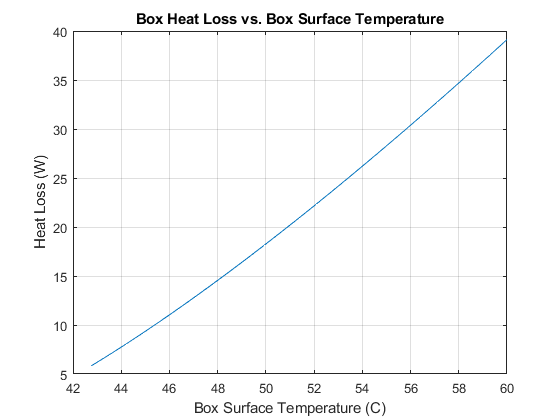

%CV Ground Station Thermal Analysis %Reference: "Fundamentals of Heat and Mass Transfer, 7th edition by % Bergman, Lavine, Incropera, and Dewitt clear clc %Air properties. For rayleigh number, these properties should be evaluated %at film temp(pg 605, first paragraph) v = 16.2*10^-6; alpha=22.9*10^-6; Beta=0.0033; Pr=0.71 ;%Prandtl Number g=9.81; %gravity kPlastic = 0.2;% Pelican cases are a polypropylene polymer. Conduction coeff of 0.17 to 0.22 https://www.ineos.com/globalassets/ineos-group/businesses/ineos-olefins-and-polymers-usa/products/technical-information--patents/ineos-engineering-properties-of-pp.pdf kAir = 33.8*10^-3; %Air at 400k, Table A1 %Goal #1 - Determine if a fan is needed by analyzing a closed box %Box: https://www.alliedelec.com/product/serpac/se430-bk/70369062/ %Size is 13.6*10.7*6.3 in box.width = inchesToMeters(13.6); box.length = inchesToMeters(10.7); box.height = inchesToMeters(6.3); %Environmental Conditions = A hot day with no wind. Start out modeling the % box in the shade (no solar loading). Neglect radiation and conduction. % Assume the bottom of the box to be insulated, such as the box sitting on % a table or the ground. % temp_ambient = farenToCelc(100); %Assume a pretty hot day out of 100F. Temp_Surface_Range = linspace(temp_ambient+5,60,25); idx = 1; for Ts=Temp_Surface_Range(1:end) %Toasty exterior of 60C %Perform a basic control volume analysis of the box using free/natural %convection on the top surface and the four sides of the box. Using example %9.3 on pg 611 %Top of the box: Analysis for upper surface of flat hot plate in cool air. Area = box.width * box.length; %top area Perim=box.width * 2+box.length * 2; %top perim L=Area/Perim; %Characteristic length for flat plate Ral_top = g * Beta * (Ts-temp_ambient) * L^3 / (v * alpha); %Rayleigh Number h_top = (kAir/L) * 0.15 * Ral_top^(1/3);% Convection coeffient for top surface, equation 9.31 q_top = h_top * Area * (Ts-temp_ambient); %watts dissipated from the top %Sides of the box: Analysis for vertical hot plate in cool air Area=box.height * Perim; L=box.height; %characeristic length for the sides of the box Ral_sides = g*Beta*(Ts-temp_ambient)*L^3 / (v*alpha); %Rayleigh Number, is less than 10^9, so use laminar relations Nul = 0.68 + 0.670*Ral_sides^(1/4) / (1 + (0.492/Pr)^(9/16))^(4/9);% Equation 9.27, more accurate nussult number h_sides = Nul*kAir/L; q_sides = h_sides*Area*(Ts-temp_ambient) qTotal(idx) = q_top+q_sides; idx=idx+1; end plot(Temp_Surface_Range,qTotal); xlabel('Box Surface Temperature (C)'); ylabel('Heat Loss (W)'); title('Box Heat Loss vs. Box Surface Temperature'); grid on; function c = farenToCelc(f) c = (f-32)*5/9; end function m = inchesToMeters(in) m = in/39.37; end